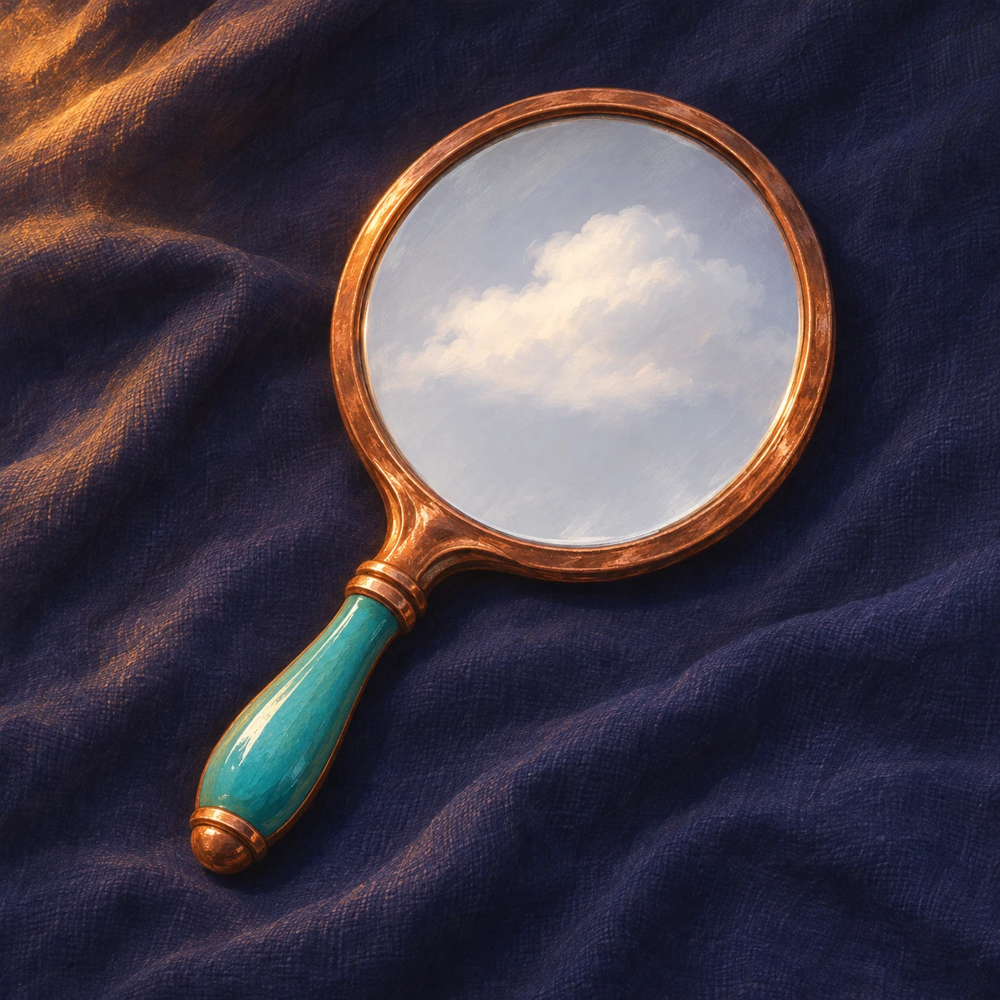
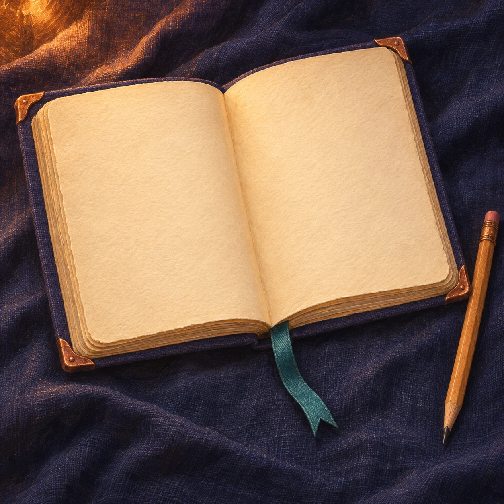

То, что можно передать из рук в руки
Открывайте отдельную карточку и показывайте её игрокам в нужный момент. Полный каталог заранее раскрывает события. Каждую карточку можно распечатать из браузера.
Вечер 1
Билет для завтрашнего рейса
Как объяснить смотрителям, что груз можно перенести сегодня?
Открыть отдельную карточкуВечер 2
Две линии на одной карте
Как проверить путь, прежде чем направить туда корабль?
Открыть отдельную карточкуВечер 6
Четыре независимых сигнала
Кто держит тормоз, кто подключает, кто наблюдает?
Открыть отдельную карточкуВечер 7
Два наблюдения неба
Что ещё нужно сравнить, прежде чем делать вывод?
Открыть отдельную карточкуВечер 8
Мелодия четырёх знаков
Расположите четыре знака. Для жителей можно выбрать и временное ручное расписание.
Открыть отдельную карточкуВечер 9
Три предложения для совета
Кто согласен? Что проверим первым? Как остановим опыт при ошибке?
Открыть отдельную карточкуВечер 12
Открытка из изменившегося мира
Ведущий заполняет по реальным событиям, затем передаёт игрокам.
Открыть отдельную карточкуПредметы путешествия

Семя-домик
Открыть предмет
Честное зеркало
Открыть предмет
Перемычка четырёх ветров
Открыть предмет
Камертон четырёх голосов
Открыть предмет